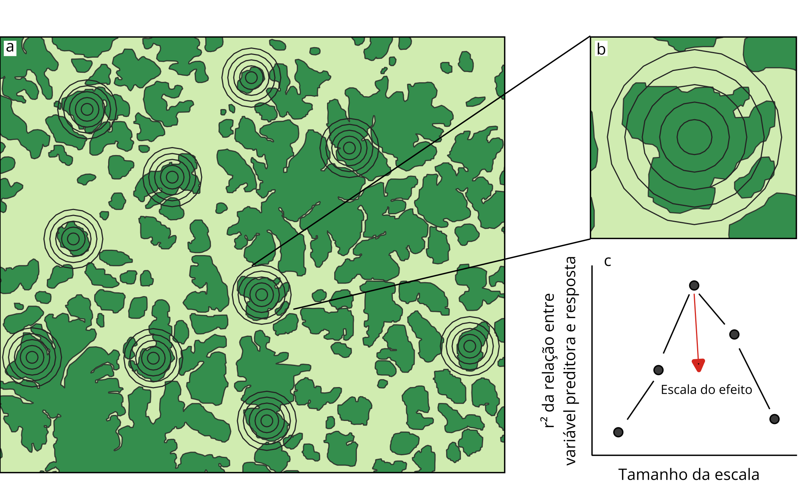
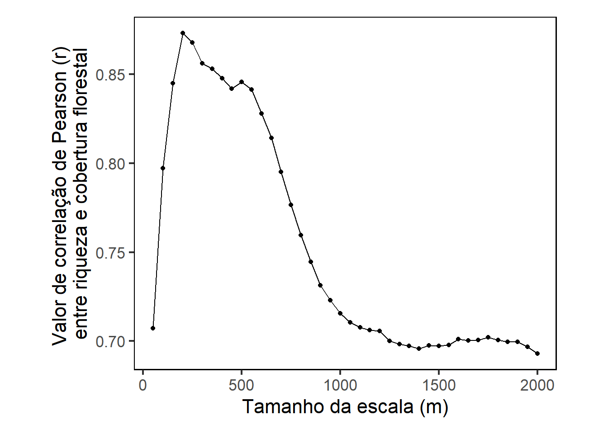

# Carregue os pacotes necessários
library(ggplot2) # Se você não possuir esse pacote, pode instala-lo usando install.packages(ggplot2)
# Limpe a memoria do R
rm(list = ls())
# Desative a notacao cientifica
options(scipen = 999)
# Defina seu diretorio
setwd("C:/Users/ivana/OneDrive/Ivana-Cardoso.github.io/posts/Escala_efeito") # Nao esqueca de mudar para a pasta onde você ira salvar os dadosO que é escala?
A escala é um conceito central no planejamento de pesquisas e na interpretação de padrões ecológicos. Ela define a lente pela qual observamos fenômenos naturais e é composta por dois elementos-chave:
Grão: a menor unidade medida ou o tamanho das unidades amostrais;
Extensão: a área total abrangida pela pesquisa ou a duração de uma série temporal.
A escala espacial na qual características da paisagem são medidas pode afetar as relações inferidas (Wiens, 1989). Por exemplo, em um estudo com 12 espécies de besouros, a correlação entre a cobertura florestal e a abundância variou de positiva a inexistente, dependendo da escala em que a cobertura florestal foi medida (Holland et al., 2004). Além disso, cada espécie interage com o ambiente de maneira diferente. Por exemplo, uma análise da cobertura florestal em paisagens de 2 km de raio revelou efeitos opostos em diferentes grupos de aves: aves especialistas de floresta, frugívoras e insetívoras tiveram sua diversidade reduzida em áreas com menor cobertura florestal. Por outro lado, aves generalistas apresentaram maior diversidade nessas mesmas áreas (Morante-Filho et al., 2015). Assim, o que pode ter pouco efeito para algumas espécies em uma determinada escala pode ser catastrófico para outras. Isso exige ajustes no desenho amostral para evitar conclusões equivocadas, já que escalas inadequadas podem não revelar relações ecológicas ou criar falsos padrões. Por isso, muitas vezes é necessário testar diferentes escalas para descobrir a escala do efeito.
O que é escala do efeito?
A escala do efeito é a escala espacial em que uma determinada característica da paisagem melhor explica a variável resposta (Jackson e Fahrig, 2015). Ela pode ser determinada seguindo os passos abaixo:
Na coleta de dados: medindo a variável resposta em várias unidades amostrais em uma região (Fig.1a);
Na análise multiescala: medindo a característica da paisagem de interesse em múltiplas extensões espaciais ao redor de cada unidade amostral (Fig. 1b);
Na análise estatística: identificando a escala que apresenta maior valor do coeficiente de correlação, inclinação da regressão ou valor de informação de modelos entre a variável preditora de interesse, relacionada a estrutura paisagem, e a variável resposta de interesse (Fig. 1c).

A seleção de escalas espaciais deve considerar a biologia da espécie estudada. Por exemplo, em um estudo com aves amazônicas de sub-bosque que testou 40 intervalos, a menor escala (50 m) foi definida como intermediária entre a relutância dessas aves em atravessar clareiras de 30 m e sua capacidade de cruzar clareiras de até 70 m. Já a maior (2.000 m) correspondeu ao valor frequentemente usado em estudos sobre fragmentação do habitat (Bueno e Peres, 2019). Por fim, além de refletir a biologia das espécies, é fundamental testar diferentes intervalos e considerar que a escala de efeito identificada em análises multiescala pode ser imprecisa se as escalas forem:
Muito pequenas ou muito grandes;
Limitadas em amplitude (i.e., apenas tamanhos intermediários);
Insuficientes em quantidade (i.e., poucas escalas testadas).
Como calcular a escala do efeito?
Para esse exercício, vamos utilizar os dados de Bueno e Peres (2019). Escolhi esse estudo porque os autores calcularam a cobertura florestal em diferentes escalas espaciais e identificaram a escala de efeito. Isso nos permite comparar nossa abordagem com a do estudo, garantindo que estamos calculando corretamente.
No material suplementar do artigo, os autores disponibilizam um código usado nas análises e na geração dos gráficos do estudo. Esse código inicia com o tratamento dos dados e resulta na tabela abaixo (birds). Caso prefira, você pode acessar o material suplementar, baixar as tabelas originais e reprocessar os dados manualmente. Entretanto, para simplificar e manter o foco deste exercício, disponibilizei a tabela já processada e filtrada, evitando incluir detalhes técnicos que não são relevantes para nosso objetivo.
# Importe os dados
# Você pode baixar a tabela tratada no link abaixo:
# https://github.com/Ivana-Cardoso/Ivana-Cardoso.github.io/blob/main/posts/Escala_efeito/bueno_2019_insect_birds.csv
birds <- read.csv("bueno_2019_insect_birds.csv", row.names = 1)
birds[1:6, 1:3] # mostra as primeiras seis linhas e três colunas da tabela Automolus_infuscatus Automolus_ochrolaemus Bucco_tamatia
Abusado 0 0 0
Adeus 0 0 0
Andre 0 0 0
Arrepiado 0 0 0
Bacaba 0 0 0
Beco_do_Catitu 0 0 0Observe o formato dos dados da comunidade:
Linhas: Representam as unidades amostrais. Nesse estudo, as unidades amostrais são as linhas de rede de neblina utilizadas para capturar as aves. Foi usada uma linha de rede com 16 redes por ilha, assim, essas linhas são identificadas com o nome de cada ilha.
Colunas: Representam as espécies de aves insetívoras registradas no estudo. Cada coluna corresponde a uma espécie diferente.
Valores nas células: O número em cada célula indica a abundância de uma determinada espécie em cada unidade amostral.
# Os dados ambientais podem ser baixados em:
# https://knb.ecoinformatics.org/knb/d1/mn/v2/object/urn%3Auuid%3Ab0f42cac-42de-43f0-a4f7-05ea8156b1cf
islands <- read.csv("balbina_environmental_variables.csv", row.names = 1)
islands <- islands[-c(8:12),] # remove os pontos em matas contínuas
islands[1:4, 1:4] # mostra as primeiras quatro linhas e colunas da tabela latitude.WGS84 longitude.WGS84 area.ha forest.cover.50
Abusado -1.76221 -59.67875 13.31 97.96
Adeus -1.87378 -59.66240 50.08 97.78
Andre -1.58461 -59.87198 2.08 66.67
Arrepiado -1.51512 -59.73919 7.43 93.62Observe a estrutura dos dados ambientais:
Linhas: Cada linha representa uma unidade amostral.
Colunas: Cada coluna contém uma característica específica de cada unidade amostral, como coordenadas geográficas e quantidade de cobertura florestal em cada escala.
Estamos interessados nas colunas que representam a cobertura florestal em diferentes escalas espaciais. Por exemplo, a coluna forest.cover.50 (coluna 4) mostra a porcentagem de cobertura florestal na paisagem em uma escala de 50 metros ao redor de cada unidade amostral. Outras colunas, como forest.cover.100 ou forest.cover.200, seguem a mesma lógica, mas para escalas maiores (100 m, 200 m, etc.).
Para esse exercício estamos interessados em descobrir qual a escala do efeito que melhor explica a relação entre riqueza de espécies de aves insetívoras e cobertura florestal da paisagem. Por isso, o primeiro passo é transformar os dados de abundância em dados de riqueza:
# Calcula a riqueza de especies de aves insetivoras em cada unidade amostral
islands$richness = rowSums(ifelse(birds > 0, 1, 0))Determinando a escala do efeito usando correlação
No estudo de Bueno e Peres (2019), as variáveis preditora (cobertura florestal) e resposta (número de espécies) são transformadas por log10(x + 1) para todas as análises. Por isso, utilizaremos as variáveis transformadas também para o cálculo da escala do efeito. Lembre-se de atentar-se à forma como você está usando suas variáveis nas análises e certifique-se de incluí-las corretamente ao calcular a escala do efeito. Para calcular a escala do efeito usando correlação, utilizaremos o seguinte formato de comando:
nome do objeto <- cor.test(variável preditora de interesse, variável resposta de interesse)
Por exemplo, para calcular a correlação entre a cobertura florestal na paisagem em uma escala de 50 metros e a riqueza de espécies usaremos:
cor50 <- cor.test(log10(islands$forest.cover.50 + 1), log10(islands$richness + 1))
cor50$estimate cor
0.7072203 Já que precisamos fazer isso para 40 escalas, de 50 m a 2000 m em intervalos de 50 m, vamos criar um loop for e exportar os resultados em uma tabela.
# Criando um vetor com as escalas desejadas
escalas <- seq(50, 2000, by = 50)
# Criando um data frame para armazenar os resultados
resultados <- data.frame(Escala = numeric(), Correlacao = numeric(), Pvalor = numeric())
# Loop para calcular a correlação em cada escala
for (escala in escalas) {
# Criando o nome da coluna dinamicamente
nome_coluna <- paste0("forest.cover.", escala)
# Verificando se a coluna existe no dataframe
if (nome_coluna %in% names(islands)) {
# Calculando a correlacao de Pearson
cor_test <- cor.test(log10(islands[[nome_coluna]]+1), log10(islands$richness+1))
# Salvando os resultados no data frame
resultados <- rbind(resultados, data.frame(
Escala = escala,
Correlacao = cor_test$estimate,
Pvalor = cor_test$p.value
))
}
}
resultados[1:5,] # mostra as primeiras cinco linhas e todas as colunas do objeto Escala Correlacao Pvalor
cor 50 0.7072203 0.00000419514851270
cor1 100 0.7973281 0.00000002791826298
cor2 150 0.8449761 0.00000000062347696
cor3 200 0.8733220 0.00000000003349166
cor4 250 0.8680142 0.00000000006089560A tabela acima mostra os valores de correlação (coluna 2) e valor de p (coluna 3) entre cobertura florestal e riqueza de espécies para cada escala. Vamos criar um gráfico para facilitar a visualização do resultado:
plot1 <-
ggplot(resultados, aes(x = Escala, y = Correlacao)) +
geom_line() +
geom_point() +
labs(x = "Tamanho da escala (m)",
y = "Valor de correlação de Pearson (r)
entre riqueza e cobertura florestal") +
theme_bw(base_size = 16) +
theme(panel.grid = element_blank(),
panel.border = element_rect(colour = "black"),
plot.margin = margin(0.5, 1.5, 0.5, 1.5, "cm"))
plot1
Perceba que a escala na qual a correlação entre riqueza e cobertura florestal apresentou o valor mais alto foi a de 200 metros. Lembre-se de que cada ponto representa uma escala em intervalos de 50 metros. Portanto, o quarto ponto, que é o mais alto, representa a escala de 200 metros.
Conclusão
Como mencionei anteriormente, existem diferentes formas de determinar a escala do efeito, dependendo do objetivo da pesquisa e da análise utilizada. Por isso, o primeiro passo é escolher a análise mais apropriada, considerando a pergunta, os dados coletados e o delineamento da pesquisa. Em seguida, aplicamos essa análise em diferentes escalas e identificamos aquela em que a relação entre as variáveis resposta e preditora é mais forte – ou seja, a escala do efeito.
Espero que esta postagem tenha ajudado a entender o que é e como calcular a escala do efeito. Agradeço por acompanhar até aqui e desejo sucesso em suas análises futuras!
Até a próxima!